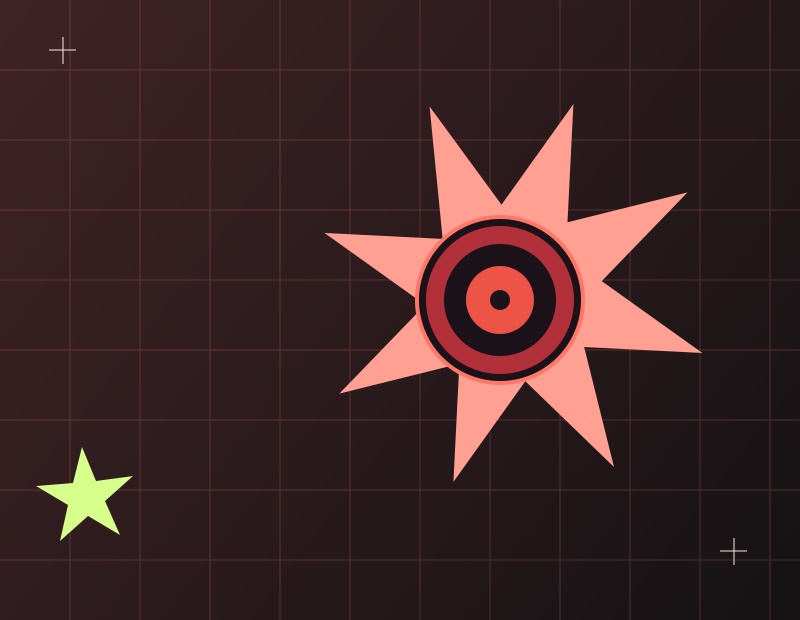
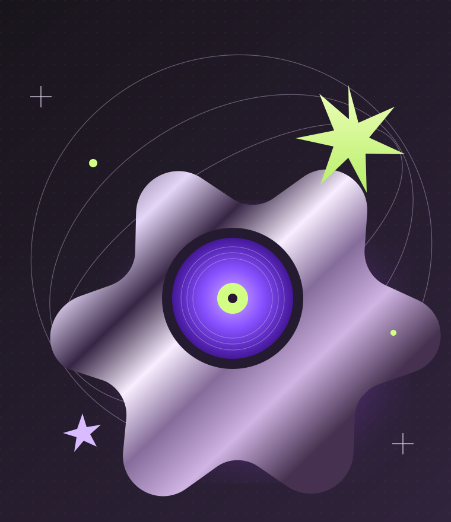
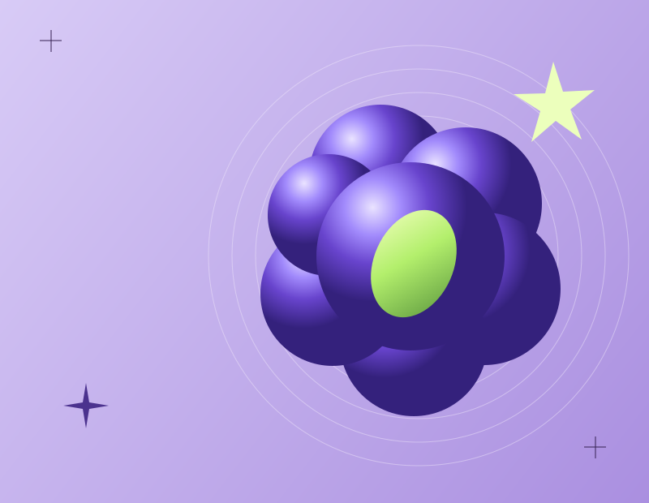

UNIVERSO 01↗
PLAYBOI
ILUSTRACIÓN ORIGINAL
HIP-HOP / RAP / TRAP
Dos maneras de romper el molde. Entra en el universo de Playboi Carti y Cochise: la música, la visión y todo lo que los hace diferentes.

THE NEW
WAVE.
01 / LOS ARTISTAS
Conoce a los artistas detrás del sonido.
Su recorrido, su
evolución, sus referencias
y nuestra lectura de su sonido.


02 / EL SONIDO
Una puerta de entrada a sus catálogos.
Escucha en tu
plataforma favorita y
descubre qué universo va contigo.
Los enlaces abren búsquedas en Spotify. No se reproduce audio en esta página.
03 / CARA A CARA
Compartir una escena no significa
compartir una identidad. Los
hechos
y las lecturas están identificados.
| EL MATIZ | PLAYBOI CARTI | COCHISE |
|---|
04 / DETRÁS DEL CONTENIDO
Una mirada musical con curiosidad y criterio.
Las fichas distinguen los datos documentados de las interpretaciones. Las observaciones sobre actitud describen la imagen pública; no son evaluaciones de la personalidad privada.
Las ilustraciones SVG y las composiciones gráficas se crearon para Rapverse. No son fotografías de los artistas ni reproducciones de portadas oficiales.
No alojamos ni reproducimos grabaciones. Los enlaces a plataformas son enlaces de navegación y no implican afiliación o autorización de los artistas.
Las fuentes Anton y Space Grotesk se distribuyen bajo SIL Open Font License 1.1. Sus licencias están incluidas en Anton y Space Grotesk.
«Popular» requiere un criterio y una fecha. La selección distingue los puestos semanales del Hot 100 de las canciones destacadas por Apple Music; no ordena toda la discografía por reproducciones actuales.
Las interpretaciones son propuestas para escuchar y comparar, no citas ni opiniones atribuidas a los músicos. No se infiere una influencia directa solo por un parecido vocal.
LA CULTURA SE ESCUCHA.
TAMBIÉN SE EXPLORA.